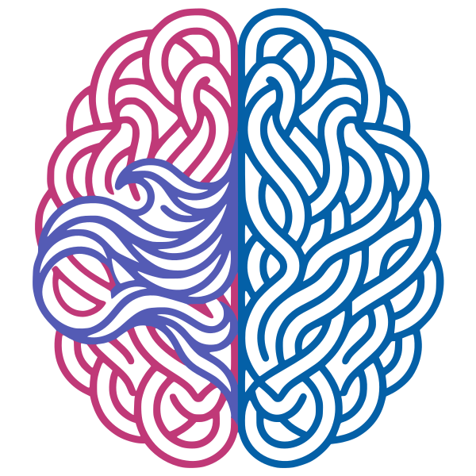

mvp-pbs/mvp-pbs.md
Version charte : mvp-pbs.html
| Champ | Valeur |
|---|---|
| Projet | FlowLearn |
| Formation | T-ESP-800 |
| Livrable | 04 — PBS |
| Version | v0.1 — brouillon |
| Statut | À revoir |
| Question | Section |
|---|---|
| De quoi le produit est-il composé ? | § Arborescence + dictionnaire |
| Qui est responsable de chaque livrable ? | § Rôles PBS |
| Quelles contraintes techniques ? | § Spécificités techniques |
Produit : DopaLearn MVP (v0.1)
_Electron (Desktop), Capacitor (Mobile)_
| N° | Fonctionalités | Validation |
|---|---|---|
| 1 | Lancement du jeu | Nouvelle session avec le score réinitialisé à 0. |
| 2 | Chargement d'une questions et des réponses | Charge une question et des réponses valide. |
| 3 | Affichage de la question et des réponses | La question et les réponses s'affiche correctement. |
| 4 | Sélection de la réponse | Le joueur ne peut selectionner qu'une seule réponse. |
| 5 | Validation de la réponse | Vérifie si la réponse est correcte. Incrémente le score si elle est bonne. |
| 6 | Passage à la prochaine question | Efface la question et les réponses. Charge une nouvelle question → Fonctionalité N°2 |
| 7 | Fin de jeu | Affiche le score total. |
| N° | Fonctionalités | Validation |
| 1 | Lancement du jeu | Nouvelle session avec le score réinitialisé à 0. |
| 2 | Chargement d'une questions et des réponses | Charge une question et des réponses valide. |
| 3 | Affichage de la question et des réponses | La question et les réponses s'affiche correctement. |
| 4 | Sélection de la réponse | Le joueur ne peut selectionner qu'une seule réponse. |
| 5 | Validation de la réponse | Vérifie si la réponse est correcte. Incrémente le score si elle est bonne. |
| 6 | Passage à la prochaine question | Efface la question et les réponses. Charge une nouvelle question → Fonctionalité N°2 |
| 7 | Fin de jeu | Affiche le score total. |
_FastAPI_
_PostgreSQL / Supabase avec pgvector_
_LlamaIndex : Import PDF/Textes et découpage_
_PydanticAI pour validation logique/reflexion simple (LangGraph pour boucles complexes)_
_LiteLLM : Générateur de quiz QCM_
4.1 Algorithme de Sélection des Questions
Méthode de répétition espacée type Anki (globale) ou sélection manuelle d'un thème choisi par l'utilisateur.
Système de scoring basé sur les KPIs récoltés. Le but de l'algorithme est de cibler le profil utilisateur pour maximiser son taux de rétention sur l'application.
wbs :
Protection des données personnelles (RGPD), sécurisation des données d'apprentissage.
La conception et la réalisation du MVP s'articulent autour de 3 rôles clés :
| Réf | Nom du livrable | Description / Périmètre | Critères d'acceptation (DOD) | Responsable |
|---|---|---|---|---|
| 1.1 | multiplatoforme | Outils adaptant l'application React web en logiciel bureau (Electron) et mobile (Capacitor). | Déploiement fonctionnel sur Mac, Windows, iOS et Android à partir du même code. | Équipe de Développement |
| 2.1 | Algorithme de Rétention | Logique de "Hook" éthique alternant questions simples/défis. Collecte des KPIs en jeu. | Les KPIs d'engagement sont trackés et formatés de manière unifiée pour le backend | Porteur de Projet (règles) & Éq. Dév (code) |
| 2.2 | Pont de Communication IoT | Connecteur Godot <> Hardware. Prépare le terrain pour de futurs périphériques physiques. | Format de sortie unifié et communication établie (ESP32, etc.) | Équipe de Développement |
| 2.3 | Standardisation JSON | Contrat de données strict entre Backend IA (3.x) et Moteur Godot (2.x). | Tous les flux QCM/Bonus respectent un schéma JSON unique sans exception. | Équipe de Développement |
| 2.4 | Protocole IoT (ESP32) | Protocole standardisé permettant d'ancrer des mécaniques de récompense physiques (bonbons, lumières, etc.). | Les récompenses virtuelles déclenchent des actions physiques fiables via l’ESP32 | Équipe de Développement |
| 2.5 | Expérience de Jeu 1 | Mini-jeu où le système RAG est la mécanique centrale ; répondre juste déclenche des actions en jeu. | Boucle de gameplay stable, intégration fluide du format JSON standardisé | Équipe de Développement |
| 3.3 | Module Ingestion RAG | Analyse des documents importés (LlamaIndex), indexation vectorielle. | Indexation réussie dans Supabase/PostgreSQL, recherche pertinent | Équipe de Développement |
| 3.4 | Orchestrateur Agents | Cerveau central, gère les flux complexes et garantit des sorties fiables via PydanticAI. | Données LLM strictement typées ; pas d’hallucination bloquante | Équipe de Développement |
| 4.1 | Algorithme de Sélection | Décide quelle question poser (Anki, Manuel, ou via algorithme de rétention). | L'utilisateur reçoit des questions pertinentes selon sa courbe de l'oubli | Équipe de Développement |
| 4.2 | Moteur de Ciblage (Hook) | Analyse les KPIs pour adapter l'expérience/utilisateur et maximiser l’utilité du temps passé. | Le scoring influence directement la difficulté du jeu (cf. 2.1). | Équipe de Développement |
| 5.1 | Sécurité & RGPD | Coffre-fort de données, architecture sécurisée. | Conformité légale, suppression de compte OK, failles auditées et corrigées | Pôle Cybersécurité |
La robustesse du produit repose sur le livrable 2.3 (Standardisation JSON). Tous les échanges entre les LLM (via LiteLLM/PydanticAI) et les expériences de jeu (Godot) doivent respecter des schémas Pydantic stricts, garantissant un format JSON immuable en entrée du moteur de jeu.
_FastAPI_ (Python) pour des performances asynchrones élevées. Données textuelles et embeddings (RAG) sécurisés (RGPD) sur _PostgreSQL / Supabase_ avec _pgvector_.
Le cœur applicatif centralisé sous _React_. Portabilité assurée par _Electron_ (Desktop) et _Capacitor_ (Mobile).
Expériences ludiques sur _Godot Engine_ (GDScript pour la logique, C# en cas d'optimisation). Le pont de communication permet d'interfacer des objets connectés (_ESP32_) pour ancrer le système de récompense dans la réalité ou connecter l’IoT.